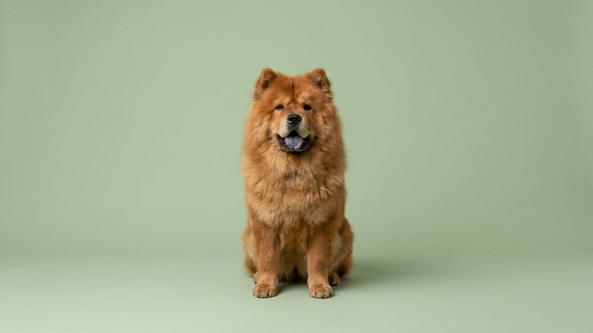

На первый взгляд чау-чау — пышная плюшевая игрушка с «медвежьей» мордой. Но эта порода старше большинства современных стандартов и несёт в себе характер, с которым мало кто справляется без подготовки. Ниже — честный разбор: что отличает чау-чау от других пород, как устроена их преданность, зачем им нужна правильная социализация и что происходит с густой двойной шерстью летом.
🐾 Не уверены, что это опасно?
Опишите симптом в AnimaLife — AI-ветеринар за минуту подскажет, что в пределах нормы, а когда пора к врачу.
Чау-чау — одна из немногих пород, которую сравнивают с кошкой по психологии. Она не ищет одобрения, не навязывается и не встретит хозяина прыжками у двери каждый вечер. Это не равнодушие: чау-чау глубоко привязана к своей семье, но демонстрирует это сдержанно. К чужим людям — устойчивое недоверие, которое не проходит само по себе. Без ранней социализации сдержанность перерастает в нежелательное поведение на улице и в гостях.
Воспитание требует последовательности и спокойной уверенности. Давление и принуждение не работают: чау-чау закроется и перестанет реагировать. Короткие тренировки, уважение к границам собаки и чёткие правила с первых недель — это основа, без которой порода становится неуправляемой. Базовый курс послушания с кинологом настоятельно рекомендуется.
Тёмно-синий или фиолетово-чёрный язык — визитная карточка чау-чау и одна из редких анатомических особенностей в кинологии. У щенков до 8–10 недель язык розовый, затем пигментация нарастает. Побледнение пигмента у взрослой собаки может быть сигналом для осмотра у ветеринара.
Двойная шерсть чау-чау — плотный подшёрсток плюс жёсткий остевой волос — требует вычёсывания 2–3 раза в неделю, а в период линьки (весна и осень) — ежедневно. Колтуны образуются быстро в зонах трения: за ушами, под мышками, в паху. Расчёска с вращающимися зубьями и пуходёрка — базовый набор. Стрижка под ноль противопоказана: шерсть защищает от перегрева и солнечного ожога кожи.
Летом чау-чау тяжело переносит жару. Прогулки — ранним утром и вечером, в тени. Вода должна быть в постоянном доступе. Если собака ищет прохладный пол, часто дышит и отказывается двигаться — это сигнал перегрева: уведите в прохладное место и проконсультируйтесь с ветеринаром. Стрижку шерсти при жаре обсудите со специалистом, не принимайте решение самостоятельно.
🐾 Питомец ведёт себя странно?
AnimaLife расшифрует поведение кошки и собаки и подскажет, что делать. Попробуйте бесплатно прямо в мессенджере.
🐾 Понравился разбор?
Подпишитесь на канал — каждый день разбираем по одному тревожному симптому у кошек и собак: что в пределах нормы, а когда пора к врачу. Подпишитесь, чтобы не пропустить разбор, который может спасти здоровье вашего питомца.
Чау-чау — выбор для людей, которые ценят самодостаточного компаньона, а не собаку, которая «любит всех». Порода хорошо живёт в семье с детьми старше 7–8 лет, которые умеют обращаться с животными без хаоса и дёргания. С маленькими детьми — только под контролем взрослых: не из-за агрессии, а из-за непредсказуемости реакций при неожиданных движениях.
Новичкам в собаководстве порода не рекомендуется. Чау-чау проверяет границы с первых дней и быстро учится управлять нерешительным хозяином. Опытный владелец, готовый к ежедневному уходу за шерстью, двум прогулкам в день и последовательному воспитанию — получит спокойную, достойную и по-настоящему преданную собаку.
Материал носит информационный характер и не заменяет очную консультацию ветеринара.